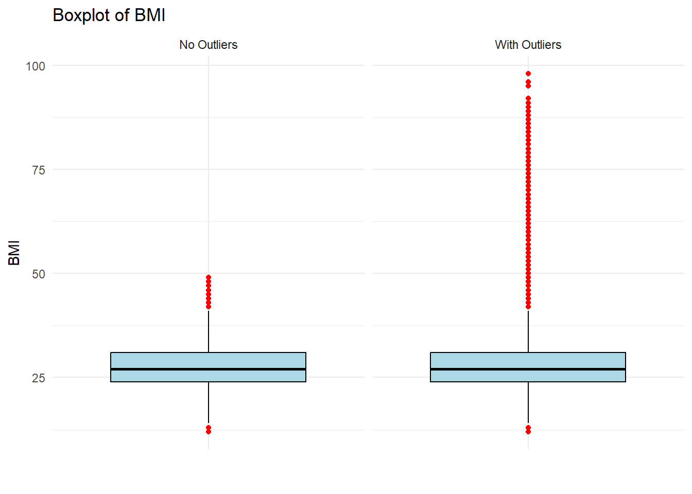
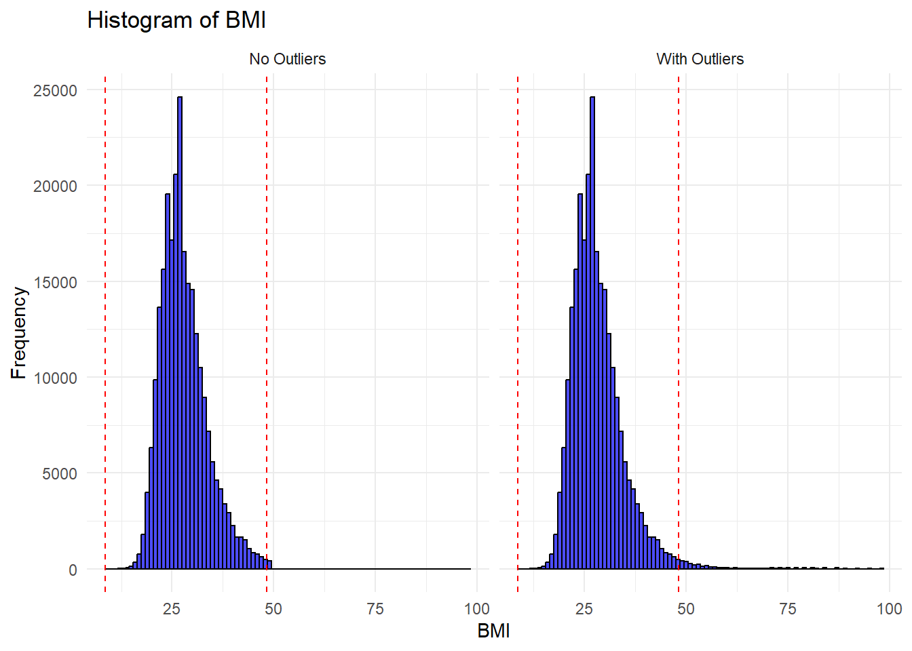
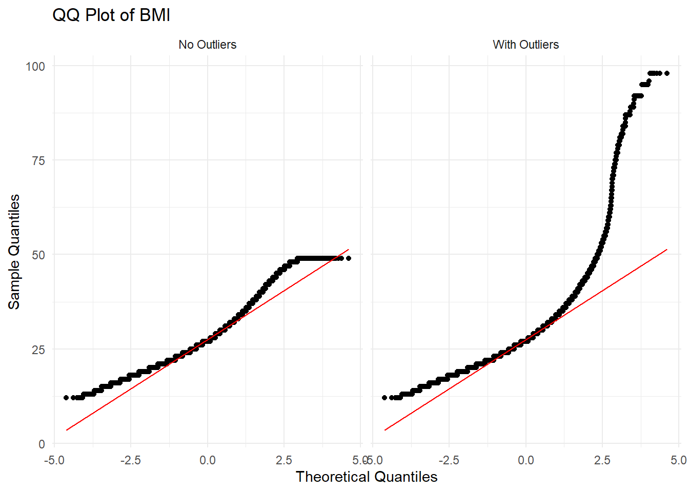
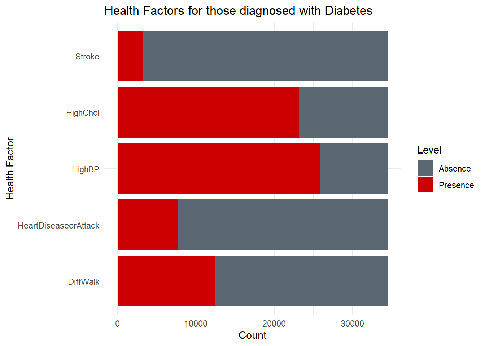
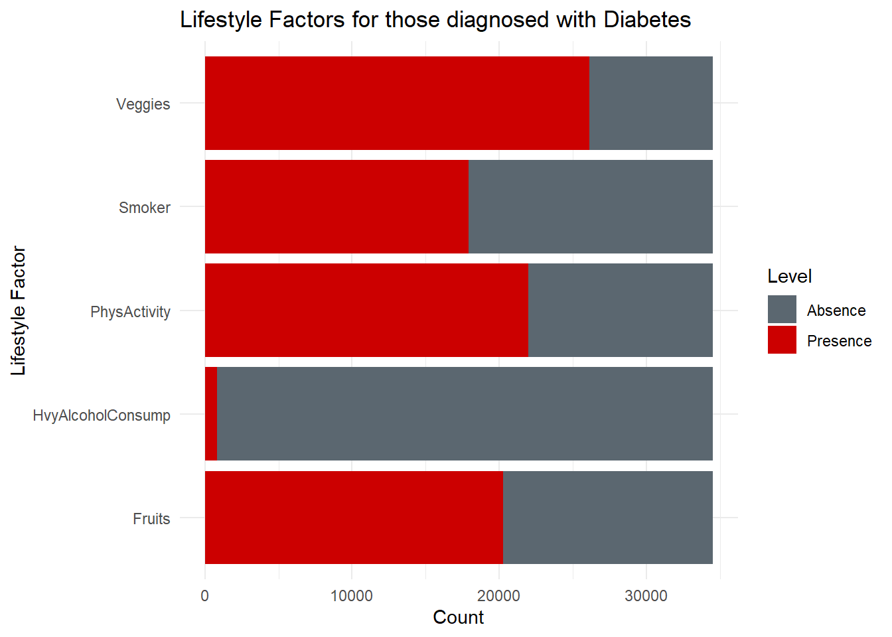
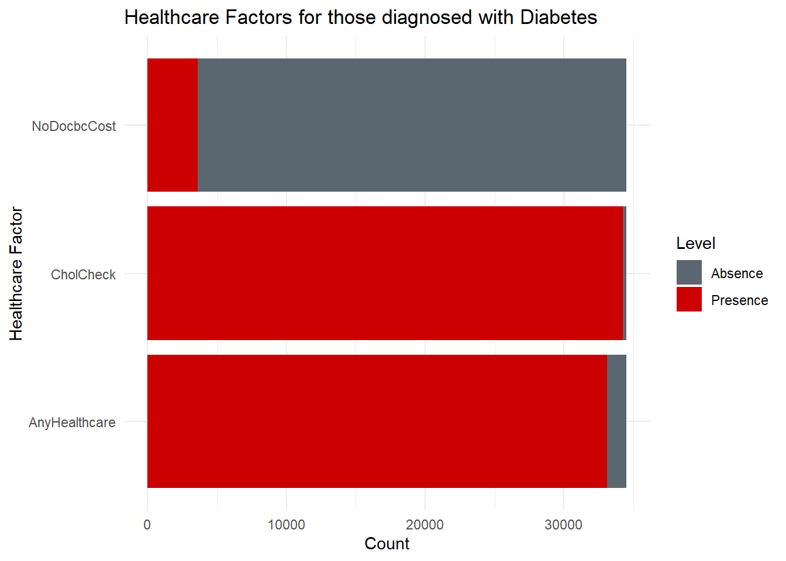
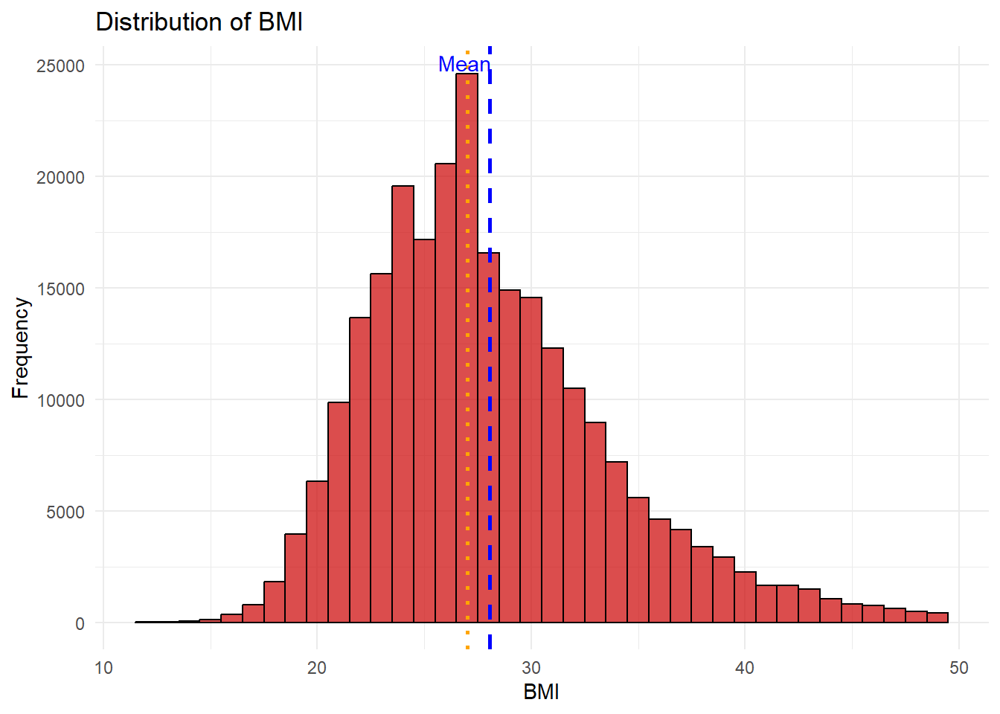
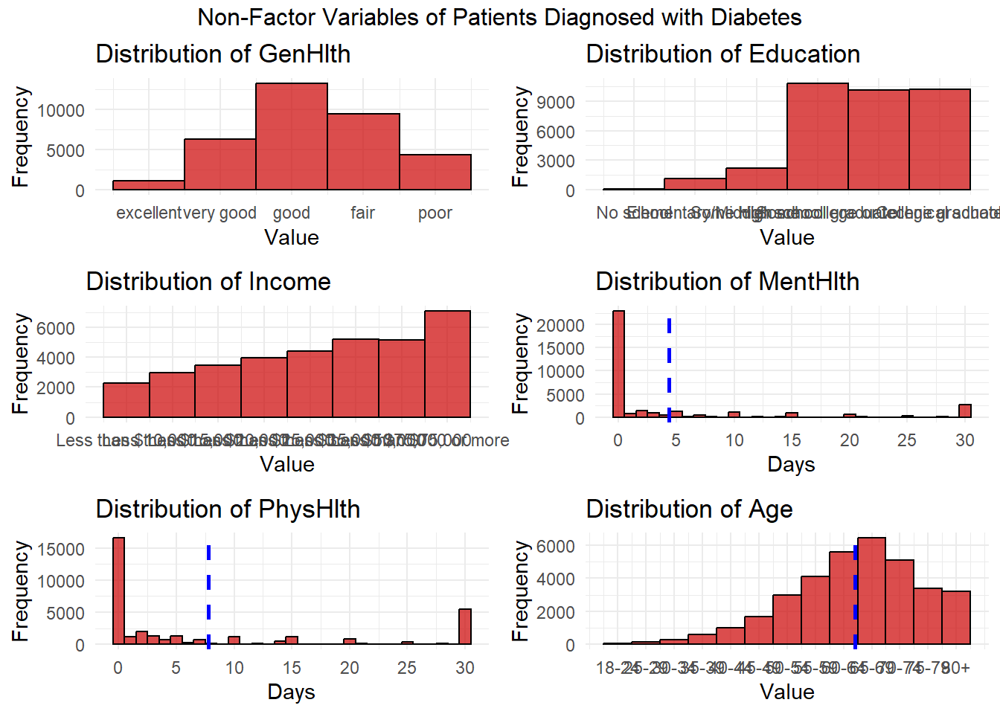
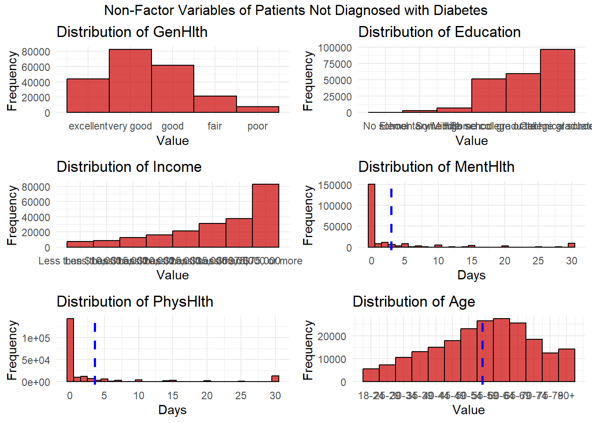

library(tidyverse)
library(ggplot2)
library(knitr)
library(kableExtra)
library(outliers)
library(forcats)
library(gridExtra)
library(dplyr)
library(tidyr)
library(patchwork)Diabetes Health Indicators - Exploratory Data Analysis
Diabetes Summary
Diabetes is a common chronic disease in the United States, affecting millions of Americans and imposing a significant financial burden on the US healthcare system. It is a disease that impairs the body’s ability to regulate blood glucose, leading to severe complications like heart disease, vision loss, and kidney disease. Early diagnosis and management through lifestyle changes and medical treatments can lessen its impact. The Center for Disease Control (CDC) reports that as of 2018, 34.2 million Americans have diabetes, with substantial economic costs nearing $400 billion annually. To better understand diabetes, the CDC conducts an annual telephone survey through the Behavioral Risk Factor Surveillance System (BRFSS). They have been collecting observational data since 1984 and through this program, 400,000 responses are collected annually on various behaviors and conditions about the disease. In this exploratory data analysis, we will look at the variables, the factors, the problems that come with raw data. Visual help will give some insight into patterns and narratives.
Dataset and Variables
The dataset found in this analysis is from 2015. There are 253680 observations, 21 independent variables and a dependent variable called Diabetes_binary that indicates one of three categories relating to a diabetic diagnosis.
#Read in the dataset
diabetes_data_raw <- read_csv("diabetes_binary_health_indicators_BRFSS2015.csv")#Listing of variables
colnames(diabetes_data_raw) [1] "Diabetes_binary" "HighBP" "HighChol"
[4] "CholCheck" "BMI" "Smoker"
[7] "Stroke" "HeartDiseaseorAttack" "PhysActivity"
[10] "Fruits" "Veggies" "HvyAlcoholConsump"
[13] "AnyHealthcare" "NoDocbcCost" "GenHlth"
[16] "MentHlth" "PhysHlth" "DiffWalk"
[19] "Sex" "Age" "Education"
[22] "Income" Upon reviewing the dataset, I found no missing values. However, there are approximately 9,000 rows where the BMI values exceed 50. While I considered removing these extreme values, I decided against it for now. In a production setting, I would seek advice from a medical specialist or someone familiar with the data collection to investigate these high values for potential errors or explanations. I will conduct an outlier test on these values, and depending on the results, I may prepare two reports—one including the BMI extremes and one excluding them.
#Checking for missing data
diabetes_data_NA_report <- diabetes_data_raw %>%
summarise_all(~sum(is.na(.))) %>%
pivot_longer(cols = everything(), names_to = "Variable", values_to = "Number of missing values discovered")
print(diabetes_data_NA_report, n = Inf)# A tibble: 22 × 2
Variable `Number of missing values discovered`
<chr> <int>
1 Diabetes_binary 0
2 HighBP 0
3 HighChol 0
4 CholCheck 0
5 BMI 0
6 Smoker 0
7 Stroke 0
8 HeartDiseaseorAttack 0
9 PhysActivity 0
10 Fruits 0
11 Veggies 0
12 HvyAlcoholConsump 0
13 AnyHealthcare 0
14 NoDocbcCost 0
15 GenHlth 0
16 MentHlth 0
17 PhysHlth 0
18 DiffWalk 0
19 Sex 0
20 Age 0
21 Education 0
22 Income 0As part of wrangling the data, this code chunk was created to format the data into factors for variables that it makes sense to do so. The remaining factors I will leave as numeric values.
#Factorize the binary variables for better downstream analysis.
diabetes_data_clean <- diabetes_data_raw %>%
mutate_at(vars(Diabetes_binary, HighBP, HighChol, CholCheck, Smoker,
Stroke, HeartDiseaseorAttack, PhysActivity, Fruits,
Veggies, HvyAlcoholConsump, AnyHealthcare, NoDocbcCost,
DiffWalk, Sex), as.factor)Outlier Test for Variable BMI
Earlier, I expressed concern about outliers in the BMI variable, and these concerns appear to be justified. Both numeric and visual tests indicate a substantial number of outliers. The numeric tests showed that 2,963 observations fell outside three standard deviations from the mean, while the IQR test identified 9,847 observations beyond the bounds.
#Check outliers using Z-scores.
outlier_z_data <- diabetes_data_clean %>%
mutate(z_score = (BMI - mean(BMI)) / sd(BMI)) %>%
filter(abs(z_score) > 3) %>%
arrange(BMI)
#Check outliers using the interquartile method
Q1 <- quantile(diabetes_data_clean$BMI, 0.25)
Q3 <- quantile(diabetes_data_clean$BMI, 0.75)
IQR <- Q3 - Q1
outlier_IQR_data <- diabetes_data_clean %>%
filter(BMI < (Q1 - 1.5 * IQR) | BMI > (Q3 + 1.5 * IQR))count(outlier_z_data) # Number of outliers using the Z-Score method# A tibble: 1 × 1
n
<int>
1 2963min(outlier_z_data$BMI[outlier_z_data$BMI >= 30]) # Finding cutoff value; lowest BMI value outside 3 SDs[1] 49count(outlier_IQR_data) # Number of outliers using the IQR method# A tibble: 1 × 1
n
<int>
1 9847max(outlier_IQR_data$BMI[outlier_IQR_data$BMI <= 30]) # Finding cutoff value; highest BMI outside of the lowerbound range[1] 13min(outlier_IQR_data$BMI[outlier_IQR_data$BMI >= 30]) # Finding cutoff value; lowest BMI outside of the upperbound range[1] 42#Remove BMI observations 50
diabetes_data_clean_noOutliers <- diabetes_data_clean %>%
filter(BMI < 50)This boxplot highlights in red observations that are considered outliers.
# Combine the datasets
combined_data <- bind_rows(
mutate(diabetes_data_clean, Source = "With Outliers"),
mutate(diabetes_data_clean_noOutliers, Source = "No Outliers")
)
# Plot with faceting
ggplot(combined_data, aes(x = "", y = BMI)) +
geom_boxplot(fill = "lightblue", color = "black", outlier.colour = "red") +
labs(title = "Boxplot of BMI", x = "", y = "BMI") +
facet_wrap(~ Source) +
theme_minimal()
The histogram similarly illustrates the pronounced right skew caused by the outliers in the distribution. The dotted red lines indicate the boundaries for three standard deviations from the mean.
# Combine the datasets
combined_data <- bind_rows(
mutate(diabetes_data_clean, Source = "With Outliers"),
mutate(diabetes_data_clean_noOutliers, Source = "No Outliers")
)
# Calculate mean and standard deviation
mean_bmi <- mean(diabetes_data_clean$BMI, na.rm = TRUE)
sd_bmi <- sd(diabetes_data_clean$BMI, na.rm = TRUE)
# Define the boundaries for 3 standard deviations from the mean
lower_bound <- mean_bmi - 3 * sd_bmi
upper_bound <- mean_bmi + 3 * sd_bmi
# Plot with faceting
ggplot(combined_data, aes(x = BMI)) +
geom_histogram(binwidth = 1, fill = "blue", color = "black", alpha = 0.7) +
geom_vline(xintercept = c(lower_bound, upper_bound), color = "red", linetype = "dashed") +
labs(title = "Histogram of BMI", x = "BMI", y = "Frequency") +
facet_wrap(~ Source) +
theme_minimal()
In a typical Quantile-Quantile (QQ) plot, we expect to see a diagonal, mostly straight line. However, in the case of BMI without removal of outliers, the Q-Q plot shows a significant deviation from this pattern. The tails of the Q-Q line curve away from the diagonal line quite drastically, which strongly indicates the presence of outliers.
# Combine the datasets
combined_data <- bind_rows(
mutate(diabetes_data_clean, Source = "With Outliers"),
mutate(diabetes_data_clean_noOutliers, Source = "No Outliers")
)
# Plot with faceting
ggplot(combined_data, aes(sample = BMI)) +
stat_qq() +
stat_qq_line(color = "red") +
labs(title = "QQ Plot of BMI", x = "Theoretical Quantiles", y = "Sample Quantiles") +
facet_wrap(~ Source) +
theme_minimal()
Based on the totality of the information, I decided to treat BMI values of 50 and higher as outliers and remove them from the dataset. I chose a conservative approach using the Z-score method, which set the cutoff at 49. In contrast, the IQR and boxplot methods suggested a cutoff at 42, resulting in the removal of 6,000 more observations than the Z-score method. Given the dataset’s large size, I wanted to avoid being overly aggressive without consulting a health specialist or someone familiar with the data collection. After rerunning the boxplot, histogram, and QQ plot, I am confident in moving forward with the dataset after removing the outliers.
Data Summary
As a result of there being many variables, grouping the factored variables into themes made sense.
# Group variables into common themes.
Health_Factors <- c("Diabetes_binary","HighBP","HighChol","Stroke","HeartDiseaseorAttack","DiffWalk","Sex")
Lifestyle_Factors <- c("PhysActivity","Smoker","Fruits","Veggies","HvyAlcoholConsump")
Healthcare_Factors <- c("CholCheck","AnyHealthcare","NoDocbcCost")| Health Factors | Levels | Counts | Proportions |
|---|---|---|---|
| Diabetes_binary | 0,1 | 216638(0) 34495(1) | 0.86(0) 0.14(1) |
| HighBP | 0,1 | 143908(0) 107225(1) | 0.57(0) 0.43(1) |
| HighChol | 0,1 | 144693(0) 106440(1) | 0.58(0) 0.42(1) |
| Stroke | 0,1 | 240973(0) 10160(1) | 0.96(0) 0.04(1) |
| HeartDiseaseorAttack | 0,1 | 227533(0) 23600(1) | 0.91(0) 0.09(1) |
| DiffWalk | 0,1 | 209752(0) 41381(1) | 0.84(0) 0.16(1) |
| Sex | 0,1 | 140299(0) 110834(1) | 0.56(0) 0.44(1) |
| Lifestyle Factors | Levels | Counts | Proportions |
|---|---|---|---|
| PhysActivity | 0,1 | 60557(0) 190576(1) | 0.24(0) 0.76(1) |
| Smoker | 0,1 | 139778(0) 111355(1) | 0.56(0) 0.44(1) |
| Fruits | 0,1 | 91567(0) 159566(1) | 0.36(0) 0.64(1) |
| Veggies | 0,1 | 47198(0) 203935(1) | 0.19(0) 0.81(1) |
| HvyAlcoholConsump | 0,1 | 236945(0) 14188(1) | 0.94(0) 0.06(1) |
| Healthcare Factors | Levels | Counts | Proportions |
|---|---|---|---|
| CholCheck | 0,1 | 9398(0) 241735(1) | 0.04(0) 0.96(1) |
| AnyHealthcare | 0,1 | 12218(0) 238915(1) | 0.05(0) 0.95(1) |
| NoDocbcCost | 0,1 | 230169(0) 20964(1) | 0.92(0) 0.08(1) |
| Min | 1st Qu. | Median | Mean | 3rd Qu. | Max | |
|---|---|---|---|---|---|---|
| BMI | 12 | 24 | 27 | 28.057372 | 31 | 49 |
| GenHlth | 1 | 2 | 2 | 2.503227 | 3 | 5 |
| Age | 1 | 6 | 8 | 8.043053 | 10 | 13 |
| Education | 1 | 4 | 5 | 5.053008 | 6 | 6 |
| Income | 1 | 5 | 7 | 6.064874 | 8 | 8 |
| MentHlth | 0 | 0 | 0 | 3.151000 | 2 | 30 |
| PhysHlth | 0 | 0 | 0 | 4.186328 | 3 | 30 |
Data Visualization
# Define the red and gray colors
ncsu_colors <- c(
"0" = "#5B6770", # Gray for absence
"1" = "#CC0000" # Red for presence
)
# Define health factors excluding Diabetes_binary
Health_Factors <- c("HighBP", "HighChol", "Stroke", "HeartDiseaseorAttack", "DiffWalk")
# Filter dataset for Diabetes_binary = 1
filtered_data <- diabetes_data_clean_noOutliers %>%
filter(Diabetes_binary == 1) %>%
select(all_of(Health_Factors))
# Convert data to long format
long_data <- filtered_data %>%
pivot_longer(cols = everything(), names_to = "Health_Factor", values_to = "Value") %>%
group_by(Health_Factor, Value) %>%
summarize(Count = n(), .groups = "drop")
# Create the stacked horizontal bar chart with custom red and gray colors
ggplot(long_data, aes(x = Count, y = Health_Factor, fill = as.factor(Value))) +
geom_bar(stat = "identity") +
scale_fill_manual(
values = ncsu_colors,
labels = c("0" = "Absence", "1" = "Presence") # Change legend labels
) +
labs(
x = "Count",
y = "Health Factor",
fill = "Level",
title = "Health Factors for those diagnosed with Diabetes"
) +
theme_minimal()
The bar chart reveals that a positive diabetes diagnosis is indiscriminate along gender lines, indicating that both males and females are equally likely to be diagnosed with diabetes. This suggests that gender does not play a significant role in the prevalence of diabetes within the studied population.
Interestingly, the presence of heart disease, including at least one heart attack or stroke, does not appear to be a necessary comorbidity for diabetes. While cardiovascular issues are common among diabetes patients, their absence in a substantial number of cases indicates that diabetes can develop independently of these conditions.
However, the data shows that high cholesterol and high blood pressure are prevalent among diabetes patients, with over two-thirds of those diagnosed exhibiting these conditions. This finding underscores the strong association between diabetes and these two risk factors. High cholesterol and high blood pressure are known to contribute to insulin resistance and other metabolic disturbances that can lead to the development and progression of diabetes.
This information is crucial for both preventive measures and management strategies. For instance, monitoring and controlling blood pressure and cholesterol levels should be a priority in diabetes prevention programs. For individuals already diagnosed with diabetes, managing these conditions is essential to prevent complications and improve overall health outcomes.
# Define the red and gray colors
ncsu_colors <- c(
"0" = "#5B6770", # Gray for absence
"1" = "#CC0000" # Red for presence
)
# Define lifestyle factors
Lifestyle_Factors <- c("PhysActivity", "Smoker", "Fruits", "Veggies", "HvyAlcoholConsump")
# Filter dataset for Diabetes_binary = 1
filtered_data_lifestyle <- diabetes_data_clean_noOutliers %>%
filter(Diabetes_binary == 1) %>%
select(all_of(Lifestyle_Factors))
# Convert all columns to factors
filtered_data_lifestyle <- filtered_data_lifestyle %>%
mutate(across(everything(), as.factor))
# Convert data to long format
long_data_lifestyle <- filtered_data_lifestyle %>%
pivot_longer(cols = everything(), names_to = "Lifestyle_Factor", values_to = "Value") %>%
group_by(Lifestyle_Factor, Value) %>%
summarize(Count = n(), .groups = "drop")
# Create the stacked horizontal bar chart with custom ncsu colors
ggplot(long_data_lifestyle, aes(x = Count, y = Lifestyle_Factor, fill = as.factor(Value))) +
geom_bar(stat = "identity") +
scale_fill_manual(
values = ncsu_colors,
labels = c("0" = "Absence", "1" = "Presence") # Change legend labels
) +
labs(
x = "Count",
y = "Lifestyle Factor",
fill = "Level",
title = "Lifestyle Factors for those diagnosed with Diabetes"
) +
theme_minimal()
Many of the variables in the lifestyle group—such as smoking, physical activity, and fruit consumption—are split evenly among the participants. However, a noteworthy finding is that heavy alcohol consumption is not common among patients diagnosed with diabetes. In contrast, over three-quarters of these patients reported consuming vegetables one or more times a day.
This disparity between fruit and vegetable consumption is intriguing. I hypothesize that it may be due to the different ways these foods are typically prepared and consumed. Fruits are often eaten raw, making them convenient and quick to consume without additional preparation. On the other hand, vegetables frequently require cooking or seasoning, which may involve adding ingredients like oils, sauces, or salt. This additional preparation might affect the frequency and ease with which vegetables are consumed compared to fruits.
Furthermore, it’s worth exploring how these dietary habits correlate with diabetes management and overall health outcomes. For instance, the nutrients obtained from raw fruits and prepared vegetables might have different impacts on blood sugar levels and other health markers. Understanding these nuances can help tailor dietary recommendations more effectively for individuals with diabetes.
# Define the red and gray colors
ncsu_colors <- c(
"0" = "#5B6770", # Gray for absence
"1" = "#CC0000" # Red for presence
)
# Define healthcare factors
Healthcare_Factors <- c("CholCheck", "AnyHealthcare", "NoDocbcCost")
# Filter dataset for Diabetes_binary = 1
filtered_data_healthcare <- diabetes_data_clean_noOutliers %>%
filter(Diabetes_binary == 1) %>%
select(all_of(Healthcare_Factors))
# Convert data to long format
long_data_healthcare <- filtered_data_healthcare %>%
pivot_longer(cols = everything(), names_to = "Healthcare_Factor", values_to = "Value") %>%
group_by(Healthcare_Factor, Value) %>%
summarize(Count = n(), .groups = "drop")
# Create the stacked horizontal bar chart with custom ncsu colors
ggplot(long_data_healthcare, aes(x = Count, y = Healthcare_Factor, fill = as.factor(Value))) +
geom_bar(stat = "identity") +
scale_fill_manual(
values = ncsu_colors,
labels = c("0" = "Absence", "1" = "Presence") # Change legend labels
) +
labs(
x = "Count",
y = "Healthcare Factor",
fill = "Level",
title = "Healthcare Factors for those diagnosed with Diabetes"
) +
theme_minimal()
Healthcare factors significantly influence the diagnosis of diabetes. Approximately 97% of participants reported having had a cholesterol check within the last five years, and around 95% confirmed having healthcare coverage. It stands to reason that both a cholesterol check and healthcare coverage are essential for diagnosing diabetes. Furthermore, these two variables might interact with each other, so we will test for their covariance.
Eight percent of patients reported not seeing a doctor when needed in the past 12 months due to cost. While the United States has made significant strides in expanding healthcare coverage, this remaining proportion highlights the need for further adjustments in public policy to ensure that all individuals can access medical care regardless of expense.
# Define the NCSU colors
ncsu_colors <- c(
"Distribution" = "#CC0000", # Red for the distribution
"Mean" = "#0000FF", # Blue for the mean line
"Median" = "#FFA500" # Orange for the median line
)
# Create the plot
ggplot(diabetes_data_clean_noOutliers, aes(x = BMI)) +
geom_histogram(
binwidth = 1, # Adjust binwidth as needed
fill = ncsu_colors["Distribution"],
color = "black",
alpha = 0.7
) +
geom_vline(aes(xintercept = mean(BMI, na.rm = TRUE)), color = ncsu_colors["Mean"], linetype = "dashed", size = 1) +
geom_vline(aes(xintercept = median(BMI, na.rm = TRUE)), color = ncsu_colors["Median"], linetype = "dotted", size = 1) +
annotate("text", x = mean_bmi, y = Inf, label = "Mean", color = ncsu_colors["Mean"], vjust = 1.5, hjust = 1.1) +
labs(
title = "Distribution of BMI",
x = "BMI",
y = "Frequency"
) +
theme_minimal()
We have already examined the histogram after removing the outliers, but I wanted to present a more detailed view to highlight some nuances. Upon removing the outliers, we first observe that the right tail tapers but then abruptly gets truncated at around 500 observations when values reach 49. There is still a slight right skew, as the mean is positioned to the right of the median, indicating that the distribution of observations is not perfectly symmetrical around the mean..

This facet contains plots from diagnosed diabetics based on our non-factor variables. Patients were observed to report their general health as good, fair, or poor, indicating a decline in quality of life. Regarding education, diabetes diagnoses were evenly distributed among high school graduates, college graduates, and those with any college or technical school experience. Diabetes appears to be more prevalent among higher-income and older individuals, suggesting a possible interaction between these two variables that warrants further investigation. Many diabetics reported no days of mental or physical health issues, though more individuals with diabetes reported a higher number of days with physical health issues compared to mental health issues.

More Americans without diabetes reported their health as excellent, very good, or good. While the number of individuals without a diabetes diagnosis significantly exceeds those with a diagnosis, the proportion of people reporting fair or poor health among non-diabetics was nearly double that of diabetics. This suggests that even among non-diabetics, there is a substantial subset experiencing poor health.
Education levels were less uniform among non-diabetics compared to diabetics. The distributions of income and age among non-diabetics closely mirror those of diabetics, though the absolute number of observations differs. This indicates that age and income are similarly distributed across both groups, despite the difference in sample size.
The Mental Health and Physical Health variables showed similar patterns between diabetics and non-diabetics. Many individuals in both groups reported no days of mental or physical health issues, although the overall number of days with health issues was comparable. This highlights that while diabetes may exacerbate health problems, the general population also experiences significant health challenges.
Appendix: Variable description
(Disease Control & Prevention, 2015)
Diabetes_binary
NOTE: The options present are different from the source data.
0 = no diabetes/prediabetes
1 = diabetes
HighBP
0 = no high BP
1 = high BP
HighChol
0 = no high cholesterol
1 = high cholesterol
CholCheck
0 = no cholesterol check in 5 years
1 = cholesterol check in 5 years
BMI
Continuous Data
Smoker
To the question: Have you smoked at least 100 cigarettes in your entire life? [Note: 5 packs = 100 cigarettes]
0 = no
1 = yes
Stroke
To the question: (Ever told) you had a stroke.
0 = no
1 = yes
HeartDiseaseorAttack
Coronary heart disease (CHD) or myocardial infarction (MI)
0 = no
1 = yes
PhysActivity
Physical activity in past 30 days (not including job)
0 = no
1 = yes
Fruits
Consume Fruit 1 or more times per day
0 = no
1 = yes
Veggies
Consume Vegetables 1 or more times per day
0 = no
1 = yes
HvyAlcoholConsump
(adult men >=14 drinks per week and adult women>=7 drinks per week)
0 = no
1 = yes
AnyHealthcare
Have any kind of health care coverage, including health insurance, prepaid plans such as HMO, etc.
0 = no
1 = yes
NoDocbcCost
To the question: Was there a time in the past 12 months when you needed to see a doctor but could not because of cost?
0 = no
1 = yes
GenHlth
To the question: Would you say that in general your health is: scale 1-5
1 = excellent
2 = very good
3 = good
4 = fair
5 = poor
MentHlth
Days of poor mental health scale 1-30 days
PhysHlth
physical illness or injury days in past 30 days scale 1-30
DiffWalk
Do you have serious difficulty walking or climbing stairs?
0 = no
1 = yes
Sex
0 = female
1 = male
Age
NOTE: The options present are different from the source data.
1 = Age 18 to 24 Respondents with reported age between 18 and 24 years (18 <= AGE <= 24)
2 = Age 25 to 29 Respondents with reported age between 25 and 29 years (25 <= AGE <= 29)
3 = Age 30 to 34 Respondents with reported age between 30 and 34 years (30 <= AGE <= 34)
4 = Age 35 to 39 Respondents with reported age between 35 and 39 years (35 <= AGE <= 39)
5 = Age 40 to 44 Respondents with reported age between 40 and 44 years (40 <= AGE <= 44)
6 = Age 45 to 49 Respondents with reported age between 45 and 49 years (45 <= AGE <= 49)
7 = Age 50 to 54 Respondents with reported age between 50 and 54 years (50 <= AGE <= 54)
8 = Age 55 to 59 Respondents with reported age between 55 and 59 years (55 <= AGE <= 59)
9 = Age 60 to 64 Respondents with reported age between 60 and 64 years (60 <= AGE <= 64)
10 = Age 65 to 69 Respondents with reported age between 65 and 69 years (65 <= AGE <= 69)
11 = Age 70 to 74 Respondents with reported age between 70 and 74 years (70 <= AGE <= 74)
12 = Age 75 to 79 Respondents with reported age between 75 and 79 years (75 <= AGE <= 79)
13 = Age 80 or older Respondents with reported age between 80 and 99 years (80 <= AGE <= 99)
Education
NOTE: The options present are different from the source data.
1 = Never attended school or only kindergarten
2 = Grades 1 through 8 (Elementary)
3 = Grades 9 through 11 (Some high school)
4 = Grade 12 or GED (High school graduate)
5 = College 1 year to 3 years (Some college or technical school)
6 = College 4 years or more (College graduate)
Income
NOTE: The options present are different from the source data.
1 = Less than $10,000
2 = Less than $15,000 ($10,000 to less than $15,000)
3 = Less than $20,000 ($15,000 to less than $20,000)
4 = Less than $25,000 ($20,000 to less than $25,000)
5 = Less than $35,000 ($25,000 to less than $35,000)
6 = Less than $50,000 ($35,000 to less than $50,000)
7 = Less than $75,000 ($50,000 to less than $75,000)
8 = $75,000 or more
REMINDER TO DROP THE LINK TO THE MODELING.QMD
References
Disease Control, C. for, & Prevention. (2015). BRFSS codebook 2015. https://www.cdc.gov/brfss/annual_data/2015/pdf/codebook15_llcp.pdf